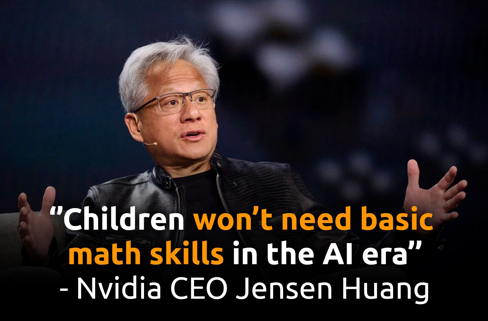

Jensen Huang is an extraordinary industrial builder and visionary, but his recent remarks suggesting that children may no longer need basic mathematical skills conflate two fundamentally different processes: the adult engineer’s tool-assisted offloading and the child’s neural substrate development.
When an experienced practitioner relies on an LLM or an algebraic calculator, they delegate mechanical execution from an already calibrated brain. When a developing child is excused from learning multiplication tables, long division, or manual arithmetic, the underlying cognitive scaffolding never forms in the first place.
1. The Schrödinger Transition: How Repetition Writes Biology
In Mind and Matter, Erwin Schrödinger examined the evolutionary relationship between consciousness and habit formation. He observed that conscious awareness only accompanies the active struggle of learning a novel task. Once an action, perception, or algorithmic routine is mastered through repeated execution, it sinks out of conscious awareness, becoming encoded into unconscious biological automaticity.
Consciousness is the tutor of the nervous system. Once the lesson is mastered through repetition, consciousness steps back and delegates execution to the unconscious substrate.
Consider the physical progression of a child learning to ride a bicycle:
- Phase 1 (Conscious Bottleneck): A novice child must consciously direct every micro-adjustment—grip pressure, pedal cadence, torso angle. Because conscious deliberation operates through sequential executive loops, the latency is sluggish: $$\tau_{\text{conscious}} \sim 10^0 \text{ to } 10^1 \text{ seconds (0.1 Hz to 1 Hz)}$$ Any sudden shift in balance requires deliberate cognitive evaluation, resulting in immediate overcorrection, oscillation, and falling.
- Phase 2 (Repetition & Encoding): Through hundreds of micro-falls and repetitive iterations, the sensorimotor loop bypasses conscious planning and hardwires into cerebellar motor circuits.
- Phase 3 (Habitual Automaticity): Balancing becomes pure autonomic reflex. Reaction latency collapses to sub-100 millisecond feedback loops ($>10\text{ Hz}$). The child no longer thinks about balancing; executive consciousness is liberated to navigate street hazards, observe traffic, or plan routes.
2. Latency Mismatch: Why Conscious Muscles Fail
The exact same neural law dictates athletic and musical performance. A concert pianist performing a complex Chopin scherzo or a tennis player returning a 130 mph serve cannot involve conscious cognition in directing finger placement or arm rotation:
The moment conscious attention intrudes on a mastered motor program, high-frequency coordination degrades. Repetition is not mindless rote; it is the physical mechanism required to lower execution latency by two orders of magnitude.
3. The CoCoMo Architecture: Unconscious Substrate vs. Single-Threaded Conscious Queue
This exact cognitive principle forms the foundation of our computational framework in CoCoMo: Computational Consciousness Modeling for Generative and Ethical AI (arXiv:2304.02438)[cite: 2].
In CoCoMo, cognitive processing is architected through a Multi-Level Feedback Queue (MFQ) scheduler that explicitly mirrors human neurobiology[cite: 2]:
"Unconscious processes are also fundamental to many vital functions of the human body... These processes are often known as automatic or reflexive because they occur unconsciously and do not require conscious thought or awareness... The unconscious mind also plays a role in other aspects of human behavior and cognition, including memory, peripheral perception, and reflexive reactions..."
— CoCoMo, Section 2.2 ("Arise of Consciousness")[cite: 2]
In Section 4.1 of CoCoMo, we formalize how tasks transition between unconscious background processing and conscious executive attention[cite: 2]:
"In CoCoMo-MFQ, all tasks that are parked in the lowest-priority queue are considered to be in the state of unconsciousness. The current running task is the one that is 'attended to.' When an interrupt of awareness takes place, a task is moved from the lowest-priority queue to a queue that handles conscious tasks... The consciousness module is single-threaded and maintains a schema for each task..."
— CoCoMo, Section 4.1 ("MFQ Scheduler - Attend Aware Tasks")[cite: 2]
Because executive consciousness is strictly single-threaded and capacity-constrained, any task that has not been automated through repetition remains trapped in conscious queues[cite: 2]:
When a child has not internalized arithmetic fundamentals ($7 \times 8 = 56$, common factor reduction, order of operations), every mathematical problem forces basic multiplication and division to interrupt into the single-threaded conscious queue[cite: 2]. The child's working memory becomes bottlenecked by mechanical execution, leaving zero cognitive bandwidth for problem decomposition, proof planning, counterfactual reasoning, or conceptual synthesis[cite: 2].
Pedagogical traditions that emphasize rigorous calculation drills do not do so out of an obsession with mechanical rote. They do so because automating foundational operations into the unconscious queue is the non-negotiable prerequisite for liberating the conscious queue for higher-order reasoning[cite: 2].
4. The Illusion of Early Offloading
Jensen’s thesis—that because machines can compute square roots and perform division, children need not bother—ignores how human epistemic intuition is built.
Outsourcing execution to an AI before internalizing the underlying mechanics produces an ungrounded thinker:
- Sanity-Checking & Hallucination Auditing: An engineer with strong number sense instantly recognizes when an automated tool produces a result that is off by an order of magnitude. A child who never practiced arithmetic lacks the intuition to detect algorithmic failure.
- Algorithmic Scaffolding: Long division is often a child’s first exposure to a multi-step deterministic algorithm involving state maintenance, quotient estimation, multiplication, subtraction, and remainder carryover. Removing it strips away a foundational exercise in computational thinking.
- Resilience and Problem Solving: Working through mathematical friction teaches children how to grapple with ambiguity, make errors, back up, and self-correct. Eliminating the struggle removes the cognitive training ground for perseverance.
Summary
Technology continuously shifts the frontier of operational execution, but it does not alter human neurobiology. We do not drill arithmetic so that children can act as human calculators in an office. We drill arithmetic to turn conscious mechanics into unconscious reflexes, freeing the single-threaded conscious mind to engage in real System-2 reasoning, counterfactual planning, and creative discovery[cite: 2].
Do not dismantle the cognitive floor and call it progress.
How to Cite This Post & Referenced Work
For attribution in academic manuscripts, policy memos, and articles, please cite this dispatch as:
BibTeX for this Dispatch:
Primary Reference (CoCoMo Computational Architecture):